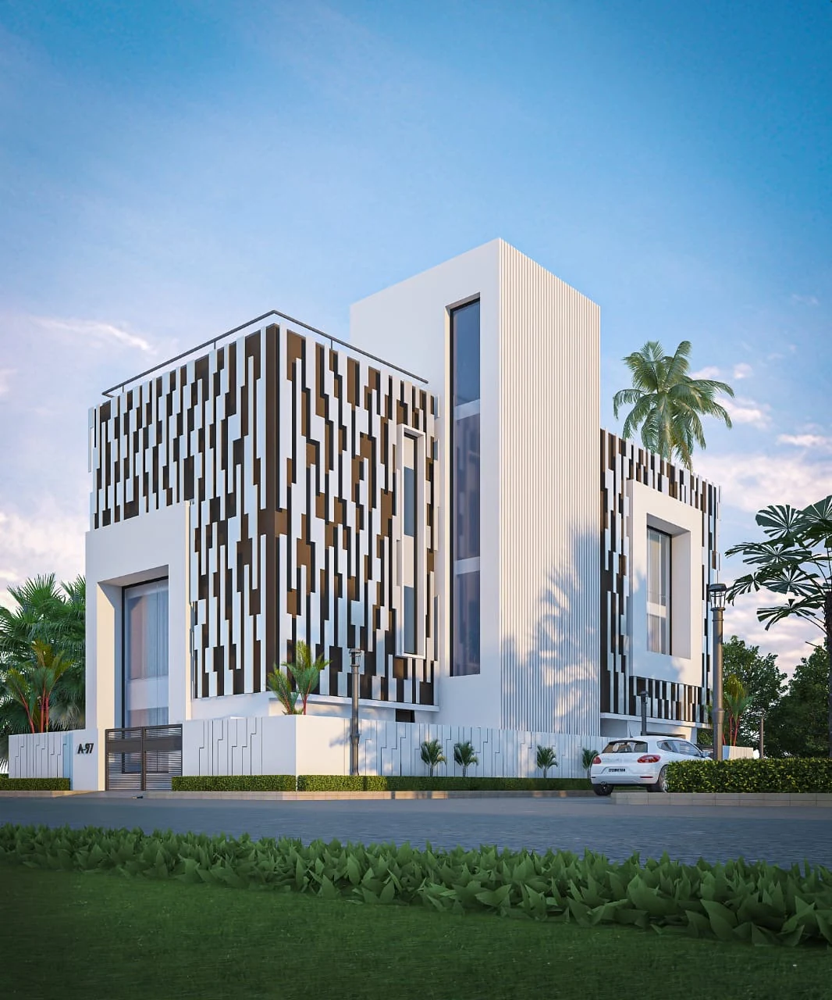
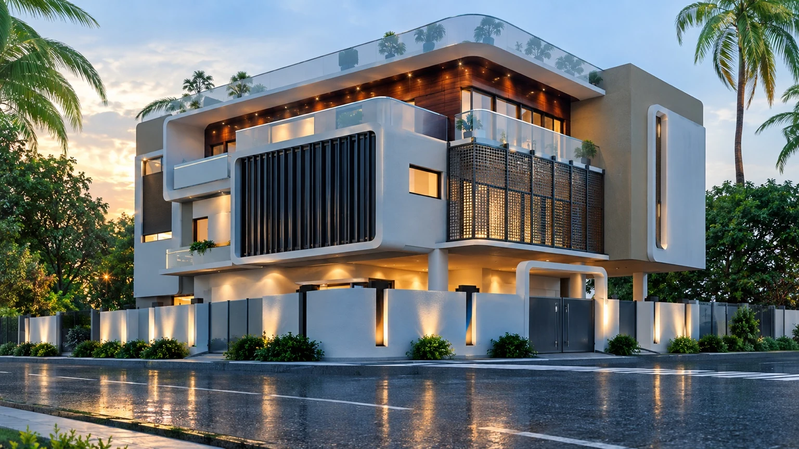

ARCHITECTURAL FOUNDATION / SELECTED WORK
Residential
design work.
Selected residential visuals alongside my experience in construction drawings, material selection, and 3D models.
 01 / BRICK FAÇADE · DESIGN VISUALIZATION
01 / BRICK FAÇADE · DESIGN VISUALIZATION
MY RESPONSIBILITIES
Drawings that
support execution.
My architectural design and consulting experience connects construction documentation, material decisions, and coordination. I developed construction drawings, 3D models, material selections, and execution documentation through direct coordination with clients and project teams.
My freelance design and construction consulting covered 50+ residential and interior projects. This design and consulting scope is separate from the 4+ projects I managed through execution.
- Documentation
- Construction drawings
- Materials
- Selection + coordination
- Visualization
- 3D models + design communication
SELECTED DESIGN VISUALS
Façades, terraces,
and architectural detail.

Vertical rhythm and façade detail.

Terraces, screens, and exterior lighting.
These selected visuals show design intent. They are visualizations rather than photographs of completed buildings, and represent work across projects. Select an image to view it at full size.